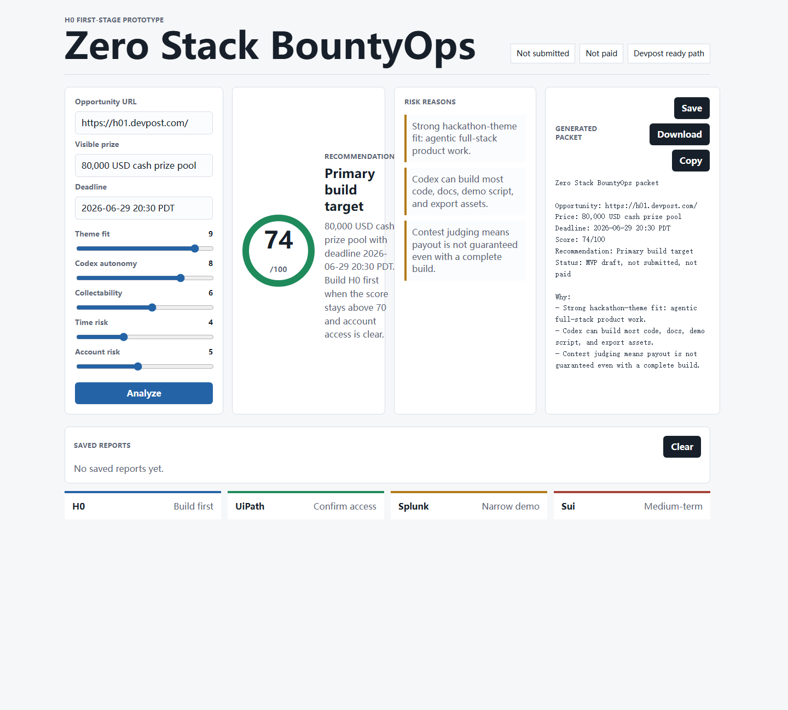

H0: Hack the Zero Stack
Zero Stack BountyOps
Open demoVoiceover
We built Zero Stack BountyOps for the awkward moment before a team starts coding. A prize page can look attractive, but the real question is whether the work is collectible, buildable, and worth the risk.
Here we enter an opportunity, adjust the practical factors, and watch the recommendation change. The dashboard explains the score instead of hiding it. At the end, it produces a packet with the next build steps, user owned actions, and submission notes.
Shots
- Open the H0 dashboard and show the title and score.
- Change collectability and time pressure controls.
- Pause on the risk reasons.
- Generate, copy, or download the packet.
